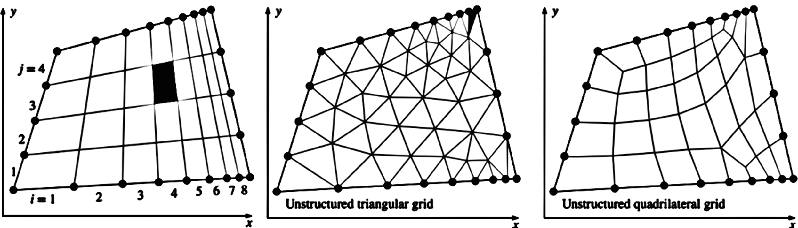

Grid Generation and Grid Independence
The first step (and arguably the most important step) in a CFD solution is generation of a grid that defines the cells on which flow variables (velocity, pressure, etc.) are calculated throughout the computational domain
Many CFD codes can run with either structured or unstructured grids.
A structured grid consists of planar cells with four edges (2-D) or volumetric cells with six faces (3-D).
Although the cells may be distorted from rectangular, each cell is numbered according to indices \((i, j, k)\) that do not necessarily correspond to coordinates \(x, y,\) and \(z\).
To construct the 2-D structured grid, nine nodes are specified on the top and bottom edges; these nodes correspond to eight intervals along these edges.
Similarly, five nodes are specified on the left and right edges, corresponding to four intervals along these edges
An unstructured grid consists of cells of various shapes, but typically triangles or quadrilaterals (2-D) and tetrahedrons or hexahedrons (3-D) are used.
Unlike the structured grid, one cannot uniquely identify cells in the unstructured grid by indices \(i\) and \(j\); instead, cells are numbered in some other fashion internally in the CFD code.
For complex geometries, an unstructured grid is usually much easier for the user of the grid generation code to create.
However, there are some advantages to structured grids.
fewer cells are usually generated with a structured grid than with an unstructured grid
For example, in the figure below, the structured grid has $8 \times 4 = 32$ cells, while the unstructured triangular grid has 76 cells, and the unstructured quadrilateral grid has 38 cells, even though the identical node distribution is applied at the edges in all three cases

◀
▶